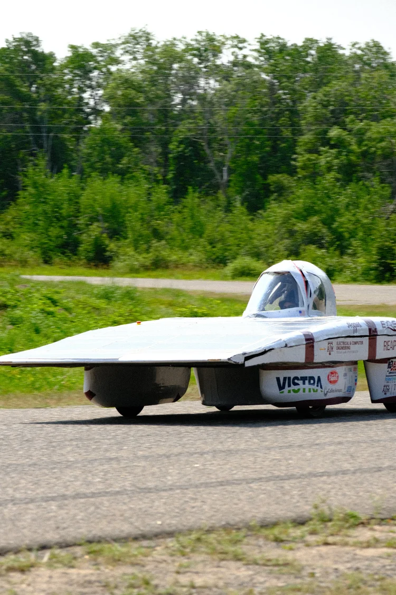
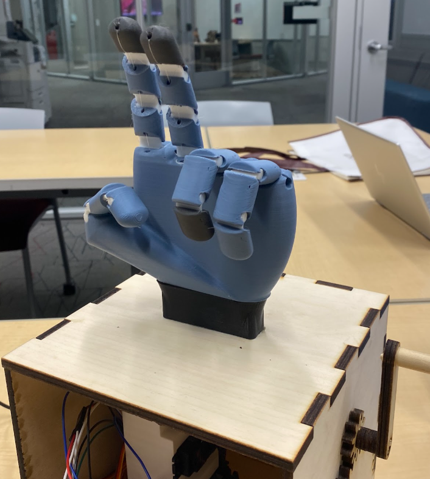
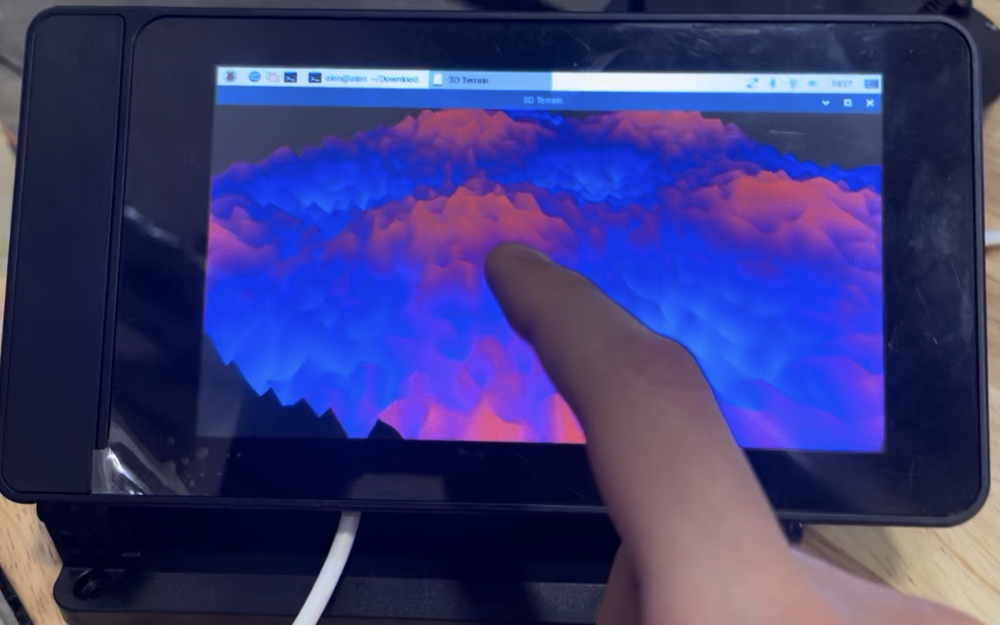

Dispersion Analysis

Solar Car Suspension

Robotic Hand

Terrain Generation
My name is Alan and I am an honors mechanical engineering student at Texas A&M with a minor in computer science.
I'm back on campus and currently working on Solar Car suspension +
research in Dr. Pal's lab studying wave propagation from dynamic excitations.
This past summer, I worked at Welker, Inc. as a mechanical design intern and previously, I interned at Toshiba
where I developed their new official quoting tool for the Medium Voltage Motors dept.
Feel free to reach out if you have any questions or suggestions!
Thanks and gig 'em!
Dispersion Analysis

Solar Car Suspension

Robotic Hand

Terrain Generation